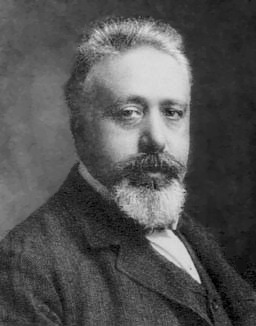
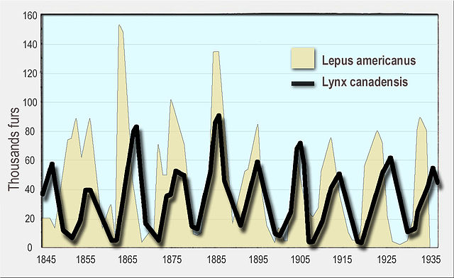

Abschnitt 4
Modelle mit mehreren Zustandsgrössen
Das Räuber-Beute-Modell
Zwei zunächst voneinander unabhängige Phänomene waren ausschlaggebend für die Entwicklung von Modellen für Räuber-Beute-Systeme. Zum einen war das die Beobachtung, dass nach dem Ersten Weltkrieg der Raubfischbestand in der Adria wesentlich höher war als in den Jahren davor, während der Beutefischbestand im Wesentlichen gleich blieb. Natürlich liess sich das teilweise mit dem Krieg erklären, in dem die Fischerei weitgehend eingestellt wurde. Es blieb aber die Frage offen, warum dieser Umstand die Raubfische viel stärker begünstigt hatte als die Beutefische.

{kind=link}
Das veranlasste unabhängig voneinander die beiden Mathematiker Alfred James Lotka und Vito Volterra zu einer mathematischen Beschreibung der Beziehung zwischen Räubern und Beutetieren. Das Ergebnis waren die sogenannten Lotka-Volterra-Differenzialgleichungen, die in der Folge sehr berühmt werden sollten.
Mit diesem Modell konnte auch das zweite beobachtete Phänomen erklärt werden, nämlich die periodischen Schwankungen in den Luchs- bzw. Schneehasenpopulationen, die von der Hudson's Bay Company im Zeitraum 1843 bis 1935 aufgezeichnet wurden.
Wir betrachten das Räuber-Beute-Modell rein iterativ:
Ht = Ht−1 + a · Ht−1 − b ·
Ht−1 · Lt−1
Lt = Lt−1 − c · Lt−1 + d ·
Ht−1 · Lt−1
Übungen
Simulieren Sie das Räuber-Beute-Modell
Ht = Ht−1 + a · Ht−1 − b ·
Ht−1 · Lt−1
Lt = Lt−1 − c · Lt−1 + d ·
Ht−1 · Lt−1
indem Sie von folgenden Werten ausgehen: H₀=100, L₀=30, a=0.05, b=0.002, c=0.06, d=0.001. Stellen Sie die Entwicklung der beiden Populationen über 300 Zeitschritte dar. Vergleichen Sie Ihr Diagramm mit den Aufzeichnungen der Hudson's Bay Company.

{kind=link}
Lösungsvorschlag
Lösungsvorschlag (lotka-volterra.py) — die Werkbank führt die ganze Datei aus, das erzeugt vier Diagramme (siehe auch Übungen 2.17 und 2.18 unten).
Wie bei den Hudson's-Bay-Aufzeichnungen pendeln beide Populationen periodisch, mit der Hasenpopulation der Luchspopulation leicht vorauseilend.
Experimentieren Sie mit den Parametern a, b, c und d im Räuber-Beute-Modell
Ht = Ht−1 + a · Ht−1 − b ·
Ht−1 · Lt−1
Lt = Lt−1 − c · Lt−1 + d ·
Ht−1 · Lt−1
Lassen sich Aussagen machen, wie «Je grösser der Parameter a gewählt wird, desto …» usw.?
Berechnen Sie alle Fixpunkte des Räuber-Beute-Modells
Ht = Ht−1 + a · Ht−1 − b ·
Ht−1 · Lt−1
Lt = Lt−1 − c · Lt−1 + d ·
Ht−1 · Lt−1
mit den Parametern a=0.05, b=0.002, c=0.06 und d=0.001.
Lösungsvorschlag
Es gibt zwei Fixpunkte:
- H=60 und L=25
- H=0 und L=0 (trivial)
Betrachten Sie nochmals das Modell aus Übung 2.14. Wie sieht das Diagramm aus, wenn Sie die Fixpunkte als Startwerte verwenden? Wie sieht es aus, wenn Sie Startwerte verwenden, die nahe bei den Fixpunkten liegen?
Lösungsvorschlag
Lösungsvorschlag, angepasst aus (lotka-volterra.py)
Genau am Fixpunkt bleiben beide Populationen für immer konstant. Schon ein winziger Abstand vom Fixpunkt genügt aber, damit die vertraute periodische Schwankung wieder einsetzt — der Fixpunkt ist also nicht stabil im Sinne einer Anziehung.
Das Phasendiagramm
Bis jetzt haben wir Populationsgrössen auf der y-Achse in Abhängigkeit von der Zeit auf der x-Achse dargestellt. Im Fall von zwei (gekoppelten) Populationen bietet sich jedoch auch ein sogenanntes Phasendiagramm an: Man verzichtet auf die Zeitachse, stattdessen wird auf jede Achse eine Populationsgrösse aufgetragen. Ein Punkt in diesem Koordinatensystem entspricht dann einem Wertepaar, das die Populationsgrössen der beiden Spezies zu einem gewissen Zeitpunkt angibt. Mit Phasendiagrammen kann die längerfristige Entwicklung der Populationsgrössen häufig besser abgelesen werden als mit den bisherigen Diagrammen.
Erstellen Sie mit Hilfe des Computers ein Phasendiagramm für die Simulation aus Übung 2.14. Die x-Achse sei den Hasen zugeordnet.
- Werden dem Phasendiagramm mit fortlaufender Zeit Punkte im Uhrzeiger- oder Gegenuhrzeigersinn hinzugefügt?
- Beide Spezies haben über den Zeitraum von 300 Zeiteinheiten mehrere Hochs und Tiefs. Zeichnen Sie im Phasendiagramm an, wo man diese ablesen kann.
- Angenommen die Populationsgrössen stabilisieren sich in einem Fixpunkt, wie sieht dann das zugehörige Phasendiagramm aus? Wie sieht das herkömmliche Diagramm aus?
- Angenommen die Populationsgrössen verhalten sich genau zyklisch, d.h. nach einer gewissen Zeit ist wieder der Anfangszustand erreicht und alles beginnt wieder von vorne. Wie sieht dann das zugehörige Phasendiagramm aus?
- Wo liegen im Phasendiagramm die Punkte mit der Eigenschaft, dass es mehr Luchse als Hasen gibt?
Lösungsvorschlag
Lösungsvorschlag, angepasst aus (lotka-volterra.py)
- Im Gegenuhrzeigersinn.
- Im Phasendiagramm kommen nach dem Stabilisieren im Fixpunkt keine neuen Punkte mehr dazu. Im herkömmlichen Diagramm bleiben ab dort beide Linien horizontal.
- Ein einzelner, unveränderlicher Punkt.
- Wir sehen dann im Phasendiagramm eine geschlossene Kurve.
- Das sind alle Punkte, die oberhalb der ersten Winkelhalbierenden liegen.
Berechnen Sie zur Frage, warum die Raubfischbestände durch das Einstellen der Fischerei anstiegen, während die Beutefischpopulation leicht schrumpfte, die Fixpunkte des allgemeinen Räuber-Beute-Modells
Bt = Bt−1 + a · Bt−1 − b ·
Bt−1 · Rt−1
Rt = Rt−1 − c · Rt−1 + d ·
Bt−1 · Rt−1
Wir nehmen an, dass vor dem Einstellen der Fischerei stabile Populationen in der Adria gelebt haben (Fixpunkt). Was passiert jetzt mit dem Fixpunkt, wenn die Fischerei eingestellt wird? Lässt sich die obige Frage nun klären?
Lösungsvorschlag
Der nicht-triviale Fixpunkt liegt bei
B = c/d und R = a/b
Wenn die Fischerei eingestellt wird, erhöht sich der Wert von a und der Wert von c verringert sich. Dadurch wird der Fixpunktwert für B kleiner und der für R grösser.
Das SI-Modell
Wir betrachten eine ansteckbare Krankheit, an der man mehrmals erkranken kann, und führen die folgenden Bezeichnungen ein.
- St
- Anzahl gesunde Individuen zum Zeitpunkt t (Susceptible individuals)
- It
- Anzahl kranke Individuen zum Zeitpunkt t (Infectious individuals)
Wir nehmen zur Vereinfachung weiter an, dass I+S konstant ist, d.h. die Grösse der betrachteten Population bleibt immer gleich. Geburten und Sterbefälle werden also nicht berücksichtigt.
Wir nehmen weiter an, dass in jedem Zeitschritt ein fixer Anteil a an Gesunden infiziert und ein fixer Anteil b an Kranken gesund und wieder ansteckbar wird:
St = St−1 − a·St−1 +
b·It−1
It = It−1 + a·St−1 −
b·It−1
Dieses grob vereinfachende Modell blendet einen beträchtlichen Teil der Komplexität der realen Gegebenheiten aus und konzentriert sich auf das Grundgerüst eines simplen mathematischen Modells, das den Kern präziserer Modelle darstellt.
Übungen
Gegeben ist das SI-Modell:
St = St−1 − a·St−1 +
b·It−1
It = It−1 + a·St−1 −
b·It−1
Stellen Sie dieses Modell für 50 Zeitschritte, die Anfangswerte S₀=1500 und I₀=0 sowie die Parameterwerte a=0.05 und b=0.1 auf dem Computer dar.
- Simulieren Sie dieses Modell für 50 Zeitschritte und erstellen Sie ein normales und ein Phasendiagramm.
- Lesen Sie aus der Darstellung den anziehenden Fixpunkt ab und weisen Sie den entsprechenden Wert rechnerisch nach.
- Angenommen wir betrachten mit dem SI-Modell eine Bevölkerung von N=50'000 Individuen und wissen, dass sich in dieser Population ein stationärer Zustand mit etwa S=45'000 und I=5'000 eingestellt hat. Versuchen Sie herauszufinden, wie die Infektionsrate a bzw. die Genesungsrate b gewählt werden müssen, damit das SI-Modell die vorliegende Situation gut beschreibt.
- Gibt es Werte für a und b, so dass der Fixpunkt des SI-Modells nicht anziehend ist?
Lösungsvorschlag
- Die Genesungsrate muss etwa 9-mal grösser als die Infektionsrate sein.
- Ja. Zum Beispiel wenn a=b=1.
Das SIR-Modell
Das obige SI-Modell lässt völlig ausser Acht, dass es in Wirklichkeit darauf ankommt, in welchem Ausmass Ansteckbare (S) mit infizierten Individuen (I) in Kontakt treten. Wir müssen also das obige Modell erweitern. Zu Neuansteckungen kann es nur dann kommen, wenn es zu Kontakten zwischen diesen zwei Gruppen kommt. Solche Kontakte können nur schwer zu Stande kommen, wenn es fast nur Ansteckbare (S) oder fast nur Infizierte (I) gibt. Die Anzahl der Neuansteckungen wird also insgesamt proportional zu St−1 und It−1 sein.
Ein aussagekräftiges Modell zur Ausbreitung von Epidemien muss neben den Ansteckbaren (S) und Infizierten (I) noch eine weitere Personengruppe beschreiben: Man bezeichnet Individuen, die aus einem Epidemieprozess aus diversen Gründen ausscheiden (z. B. durch Tod, Immunität usw.), in der Fachliteratur als «Removed». Das Zusammenfassen aller dieser Personen zu einer einzigen Gruppe ist deshalb vernünftig, weil sie alle keinen Einfluss mehr auf die Entwicklung der Ansteckbaren bzw. Infizierten haben.
Der einzig neue Übergang soll nun jener von den Infizierten zu den Removed sein. Es ist naheliegend, auch für diesen Übergang wieder einen fixen Prozentsatz c anzunehmen.
Wir erhalten das sogenannte SIR-Modell:
St = St−1 − a·St−1·It−1
+ b·It−1
It = It−1 + a·St−1·It−1
− b·It−1 − c·It−1
Rt = Rt−1 + c·It−1
Definition: Basisreproduktionszahl
Ob eine Epidemie überhaupt ausbricht, hängt vom Startzustand ab. Aus der Gleichung für It folgt
It = It−1 · (1 + a·St−1 − b − c),
die Zahl der Infizierten wächst also nur, solange a·St−1 > b + c gilt. Man nennt die Grösse
R₀ = (a·S₀) / (b + c)
die Basisreproduktionszahl: Sie gibt an, wie viele weitere Personen eine einzelne infizierte Person zu Beginn im Mittel ansteckt. Ist R₀ > 1, breitet sich die Krankheit zunächst aus, ist R₀ < 1, stirbt sie gleich wieder aus.
Übung
Implementieren Sie das SIR-Modell auf dem Computer. Wählen Sie dazu
a=0.0002, b=0.1, c=0.03, S₀=990, I₀=10 und (als Anfangswert der Removed-Gruppe) R(0)=0.
- Warum spricht man landläufig oft von einer «Grippewelle»?
- Gibt es in diesem Modell einen stationären Endzustand?
- Was passiert auf lange Sicht im Unterschied zum SI-Modell?
- Versuchen Sie, den aus dem Diagramm ablesbaren stationären Zustand algebraisch nachzuweisen. Wie lässt sich Ihr Ergebnis erklären?
- Was passiert, wenn durch die Verwendung eines neuen Medikaments die Genesungsrate b von 0.1 auf 0.11 angehoben werden kann?
- Was geschieht langfristig gesehen, wenn die Rate c statt 0.03 den Wert 0.04 annimmt? Wie ist das dabei auftretende Phänomen zu erklären?
Hinweis: Die Basisreproduktionszahl R₀ = a·S₀ / (b+c) hilft bei (2) und (4) — setzen Sie die gegebenen Werte ein.
Lösungsvorschlag
Lösungsvorschlag (sir.py) — die Werkbank führt drei Simulationen nacheinander aus: die Grundeinstellung, dann mit b=0.11 und dann mit c=0.04.
- Weil die Gruppe der Infizierten I in der Simulation einen «Peak» (bzw. eine «Welle») beschreibt und danach gegen Null geht.
- Ja.
- Anders als beim SI-Modell pendelt sich hier kein gemeinsamer, von Null verschiedener Endzustand für S und I ein — I geht gegen 0, während sich S und R auf einem festen Niveau > 0 stabilisieren (nicht die ganze Population wird krank).
- Im stationären Zustand gilt I=0. Aus der S-Gleichung folgt dann S = beliebig (jeder verbleibende S-Wert ist stationär, sobald I=0 ist) — welcher Wert sich einstellt, hängt vom ganzen Verlauf ab, nicht nur von a, b, c.
- Eine höhere Genesungsrate b senkt R₀ = a·S₀/(b+c) und verkleinert damit den «Peak» der Welle bzw. kann sie ganz verhindern.
- Eine höhere Rate c senkt R₀ ebenfalls: Infizierte verlassen die ansteckende Gruppe schneller, was die Welle abschwächt oder verhindert (Phänomen der Durchseuchungsschwelle/«Herdenimmunität» durch schnelleres Ausscheiden statt durch mehr Angesteckte).